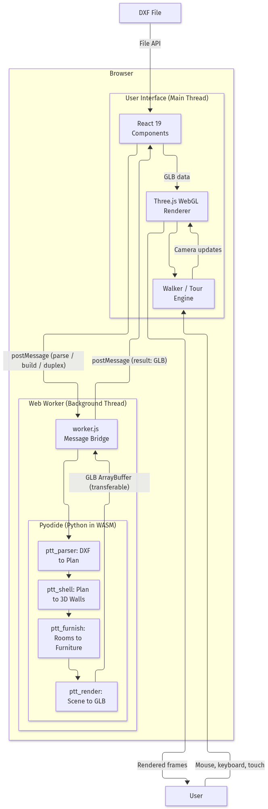
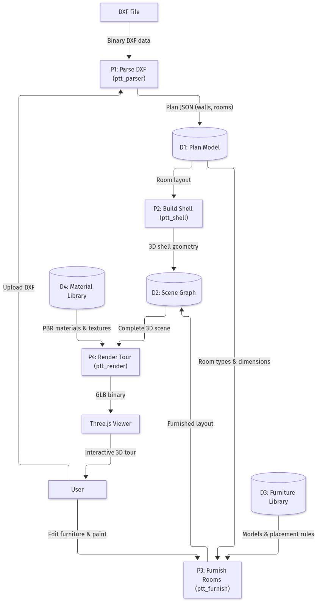

Architecture¶
System Overview¶
VisualEyes runs entirely inside the user's browser. There is no backend server — all DXF parsing, room detection, auto-furnishing, and 3D GLB generation happen client-side using Python compiled to WebAssembly (Pyodide) inside a Web Worker, paired with Three.js on the main thread.
High-Level Architecture¶

Component Details¶
1. User Interface (index.html + app.js)¶
Built with React 19 and Three.js, featuring a glass-morphism overlay UI:
- Upload Modal — Drag-and-drop or file picker for single-floor or duplex (Ground + Upper)
.dxffiles - 3D Viewer (
#view) — Full-viewport Three.js WebGL canvas with shadow mapping and environment lighting (env/sky.hdr) - Room Strip (
#strip) — Scrollable room cards with thumbnails and area metrics for one-click navigation - Control Island (
#island) — Mode switcher for Walk, Orbit, Plan, and Auto-Tour - Side Panel — Interactive furniture library, selection gizmos (move/rotate/delete), and custom wall paint color picker
- Level Selector (
#levels) — Floor switcher for duplex projects
2. Web Worker (worker.js)¶
Isolates the heavy Pyodide WASM runtime from the UI thread:
- Message Protocol:
{id, cmd, args}->{id, ok, result}(or{id, ok: false, error}) - Commands:
init: Boots Pyodide, loads WASM wheels (numpy,networkx,pydantic,pyparsing,fonttools), unpackspy.zip, and warms pipeline importsparse: Runsptt_live.parse_dxfon raw DXF bytesedit: Runsptt_live.edit_planwith user plan correctionsbuild: Runsptt_live.build_tourand transfers the resulting.glbArrayBufferduplex: Runsptt_live.build_duplexfor stacked multi-floor tours- Progress Streaming: Emits
{progress: {step, done, total}}during initialization
3. Python Pipeline (ptt_*)¶
| Module | Responsibility |
|---|---|
ptt_parser |
Extracts DXF entities (LINE, ARC, LWPOLYLINE, INSERT), constructs wall topology graph via NetworkX, detects & classifies rooms |
ptt_shell |
Extrudes 2D wall segments into 3D meshes with parametric door/window cutouts, floors, and ceilings |
ptt_furnish |
Places furniture items per room type using spatial constraints, door-swing keepout zones, and proportional scaling |
ptt_render |
Assembles the final glTF/GLB binary with PBR materials, textures, and camera/tour metadata |
4. Classic Plan Editor (classic.html)¶
A standalone 2D drafting-table editor allowing users to inspect and correct wall geometry or room labels before 3D tour generation.
Data Flow¶

End-to-End Sequence¶